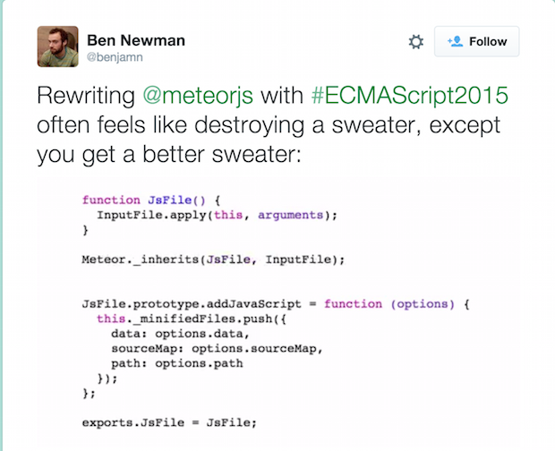

JavaScript
to
JavaScript
Hello there!
 /_aaronackerman_
/_aaronackerman_
I work on JavaScript projects at Code42


Other future syntax compilers
- esnow
- esnext
- es6-module-transpiler
- JSTransform
- esdown
- traceur-compiler
ES2015
Huge improvement to the quality
of life for JavaScript developers
arrow functions

object literal shorthands
ES5 => ES2015 Refactoring for clarity

Source code
⬇
Token stream
⬇
Abstract syntax tree (AST)
⬇
Compiled output
var a = 42;
Experimental Babel transforms
Babel Integrations
- Webpack
- Node
- React/JSX/Flow
- Jasmine
- Mocha
- ESlint
- Grunt
- Gulp
- Browserify
- More...
Supporting older browsers
- ES6 methods and Symbol polyfills
- ES5 shim
- IE10 and below - classes possible with loose mode
- IE8 and below - modules loose mode, no getters and setters
Babel defaults
Stage 2 and above
TC39 proposals
- Stage 0 - Strawman
- Stage 1 - Proposal
- Stage 2 - Draft
- Stage 3 - Candidate
- Stage 4 - Finished

this.refs.foo.findDOMNode()
⬇
ReactDOM.findDOMNode(this.refs.foo)
Thanks for coming!
/_aaronackerman_